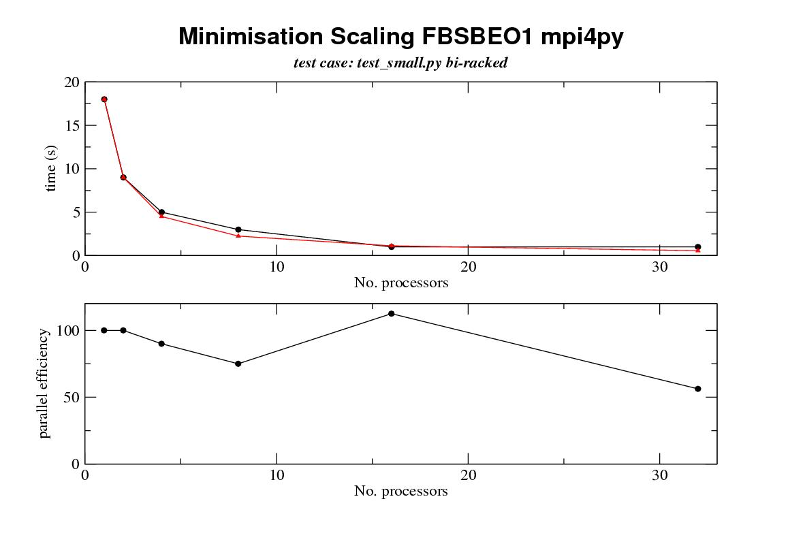

garyt@xxxxxxxxxxxxxxx wrote:
[snip]Author: varioustoxins Date: Fri May 4 01:07:07 2007 New Revision: 3280 URL: http://svn.gna.org/viewcvs/relax?rev=3280&view=rev Log: threaded multi processor support written, multi is now beta! multi now supports three substrates: mpi4py, uniprocessor, and threads Added: branches/multi_processor/multi/prependStringIO.py - copied, changed from r3275, branches/multi_processor/multi/PrependStringIO.py Removed: branches/multi_processor/multi/PrependStringIO.py Modified: branches/multi_processor/multi/commands.py branches/multi_processor/multi/mpi4py_processor.py branches/multi_processor/multi/multi_processor.py branches/multi_processor/multi/processor.py branches/multi_processor/multi/uni_processor.py Following on from the above commit this is an overview of the multi processor branch, a review of the state of the branch, how to use it, outstanding items and changes required. Architecture -------------- The processor extensions act as a wrapper around the core of relax and with relativley minimal changes (see for example multi.commands.MF_minimise_command and specific_fns.model_free.minimse()) which allows relax to distribute distribute computational tasks in a mater slave manner on a number of different processor 'fabrics'. The a fabric is thus defines a mechanism of distributing computational tasks. The three fabrics currently supported are - uni a simple single processor fabric that doesn't operate relax in parallel and replicates the results that a normal relax tag 1.3.0 session would produce. This is the default fabric and is present to provide a unified relax for both parallel and non parallel architectures. (this may seem redundant as running the thread fabric with 1 slave processor gives the same result; however, python can be compiled without thread support and this provides an implementation for these python configurations). - thread this implimentation runs calculations on parallel threads within the same machine and is ideal for a shared memory processor such as one of the latest workstaions with multiple chips with multiple cores -mpi4py this implimentation uses the mpi4py library to communicate using MPI (message passing interface) to communicate between a cluster of processes either on the same machine or on a disjoint set of machines. This is one of the common methods used to link computers in beowulf clusters there are other ways that processes can communicate , and the architecture of the multi module is such that adding a different processor fabric implimentation is relativley simple. (see for example how multi.mpi4py_processor is written as thin venear over the top of multi.multi_processor and have very few lines of code (~120) [note the name of multi_processor.py will change soon to multi_processor_base] ). processor fabrics (multi.uni_prcoessor, multi,mpi4py_processor) are loaded dynamically as plugins depending on the command line option --multi/-m and so new processor fabrics are easily created and loaded. Processor fabrics which are obvious targets for implimentation include - other implimentations using different python mpi libraries (pypar etc) - use of ssh tunnels for parallel programming - use of the twisted frame work for communication http://twistedmatrix.com/projects/ - the parallel virtual machine (pvm) via pypvm http://pypvm.sourceforge.net compilation ------------- How to get and use the current implimentation. The currrent implimentation is in a branch of the relax project and can be accessed with the follwing subversion command: Checkout over SVN protocol (TCP 3690):svn co svn://svn.gna.org/svn/relax/branches/multi_processor relax_multi Checkout over http:svn co http://svn.gna.org/svn/relax/branches/multi_processor relax_multi the implimentaton has no extra dependencies from a vanilla relax installation [ http://www.nmr-relax.com/download.html] apart from a requirement for mpi4py if you are going to use the mpi4py processor fabric. mpi4py can be obtained from the python cheese shop [cheeseshop.python.org/pypi/] at http://cheeseshop.python.org/pypi/mpi4py. You will need to compile it against an mpi implimentation (I used lam: www.lam-mpi.org. Though other mpi impilmentations should work I have not tried them) Three important points to note when compiling the mpi4py code are that 1. the mpi4py code must be compiled against a copy of the mpi libraries whicht are in a shared object. so for example for lam when you compuile it you need to use ./configure --enable-shared before you us 'make' and 'make install' so that you get a lib<xxx>.so library as well as a lib<xxx>.a ater compilation where <xxx> is the name of you mpi library (mpich, lam etc) 2. I believe the code for you mpi installation and needs to be position independant when compiled on x86_64 machines; so you need to use the -FPIC flag 3. step 2 precludes the use of compilation with the portland groups compilers as they don't seem to cope well with shared objects (allegedly and in my hands) 4. [ok i lied] I have compiled the code for mpi4py and tested under linux with both 32 bit and 64 bit processors (in my case I used a single processor machine setup to run as a 6 task lam mpi box for basic sanity testing, for real testing I used a 148 processor cluster). I have not tried things out on windows or on osx so you mileage may vary 5. [ok i lied alot, see douglas adams for examples of how to do this sort of thing in real style;-)] I believe you mpi implimentation should be compiled with the same compiler as was used for your python installation command line and running the code --------------------------------------- The multi branch adds two command line switches -m/--multi and -n/--processors -m MULTIPROCESSOR, --multi=MULTIPROCESSOR set multi processor method -n N_PROCESSORS, --processors=N_PROCESSORS set number of processors (may be ignored) --multi <MULTIPROCESSOR> specifies the multi processor implimentations to use and <MULTIPROCESSOR> defaults to 'uni' The name of the processor to use should be the same as the first part of one of the processor impimentation files in multi ie the correspondences are '-m uni' loads: multi.uni_processor.Uni_processor from uni_processor.py '-m thread' loads multi.thread_processor.Thread_processor from thread_processor.py '-m mpi4py' loads multi.mpi4py_processor.Mpi4py_processor from mpi4py_processor.py --processors sets the number of slave processors to use for calculation (there is currently always one extra master processor that allocates jobs and sevrices i/o for the thread and mpi4py processor fabrics) and is only supported by the thread implimentation. Uniprocessor always only has one processor and the mpi implimentations use the number of processors allocated to them by the mpi environment. as an example of using the mpi4py version here are the commands I use to run a 6 processor run [1 master and 5 slaves] on my linux box: lamboot mpirun -np 6 relax --multi mpi4py test_small.py lamhalt #lamclean if lam halt returns failure the lamhalt may give errors, however, sometimes if you don't stop and start lam cleanly you can get strange results output: the processor implementation gives some feedback as to what prcoessor you are running: M S> script M S> M S> M S> M S> relax repository checkout M S> M S> Protein dynamics by NMR relaxation data analysis M S> M S> Copyright (C) 2001-2006 Edward d'Auvergne M S> M S> This is free software which you are welcome to modify and redistribute under the conditions of the M S> GNU General Public License (GPL). This program, including all modules, is licensed under the GPL M S> and comes with absolutely no warranty. For details type 'GPL'. Assistance in using this program M S> can be accessed by typing 'help'. M S> M S> processor = MPI running via mpi4py with 5 slave processors & 1 master, mpi version = 1.2 M S> M S> script = 'test_small.py' M S> ---------------------------------------------------------------------------------------------------- note the processor = line another couple of things to note are that the output from the program is prepended with some text indicating which stream and which processors the output is coming from: The output prefix is divided into two parts 'processor' 'stream'> [normal output line] where processor is either a number to identify the rank of the processor, or a series of M's to indicate the master stream is either E or S for the error or output streams so here is another fragment 1 S> Hessian calls: 0 1 S> Warning: None 1 S> M S> idle set set([1, 2]) M S> running_set set([2, 3, 4, 5]) M S> 2 S> 2 S> 2 S> Fitting to residue: 24 ALA 2 S> ~~~~~~~~~~~~~~~~~~~~~~~~~~ 2 S> 2 S> Grid search 2 S> ~~~~~~~~~~~ 2 S> 2 S> Searching the grid. 2 S> k: 0 xk: array([ 0. in this case we finish a minimisation on processor 1 '1 S>' then have some output from the master processor 'M S>' and then some output from prcoessor 2 '2 S>' when running under the threaded and mpi4py implimentations you may see long gaps with no output and the output to the terminal can be quite 'jerky'. This is because the multiprcoessor implimentation uses a threaded output queue to decouple the writing of output on the master from the queuing of calculations on the slaves, as otherwise for systems with slow io the rate of io on the mastewr can control the rate of calculation! also note the std error stream is not currently used as race conditions between writing to the stderr and stdout streams can lead to garbled output. futher note that the implimentation includes a simple timer that gives some bench marking as to the speed of calculation, this is the total time that it takes for the master process to run M S> relax> state.save(file='save', dir=None, force=1, compress_type=1) M S> Opening the file 'save.bz2' for writing. M S> M S> overall runtime: 0:00:24 Interactive terminals: the multi implementation still has an interactive terminal. Tis maybe started by typing mpiexec -np 6 ../relax --multi mpi4py for example in the case of an mpi4py session All io to the treminal takes place on the master processor, but commands that are parallel still run across the whole cluster. Exceptions: exceptions from slave processors appear with slightly different stack traces compared to normal exceptions: Traceback (most recent call last): File "/nmr/jessy/garyt/projects/relax_branch/branch_multi1/multi/multi_processor.py", line 351, in run self.callback.init_master(self) File "/nmr/jessy/garyt/projects/relax_branch/branch_multi1/multi/processor.py", line 75, in default_init_master self.master.run() File "/nmr/jessy/garyt/projects/relax_branch/branch_multi1/relax_tests_chris/../relax", line 177, in run self.interpreter.run() File "/nmr/jessy/garyt/projects/relax_branch/branch_multi1/prompt/interpreter.py", line 216, in run run_script(intro=self.relax.intro_string, local=self.local, script_file=self.relax.script_file, quit=1) File "/nmr/jessy/garyt/projects/relax_branch/branch_multi1/prompt/interpreter.py", line 392, in run_script console.interact(intro, local, script_file, quit) File "/nmr/jessy/garyt/projects/relax_branch/branch_multi1/prompt/interpreter.py", line 343, in interact_script execfile(script_file, local) File "test_small.py", line 54, in ? grid_search(name, inc=11) File "/nmr/jessy/garyt/projects/relax_branch/branch_multi1/prompt/minimisation.py", line 147, in grid_search self.relax.processor.run_queue() File "/nmr/jessy/garyt/projects/relax_branch/branch_multi1/multi/multi_processor.py", line 270, in run_queue self.run_command_queue(lqueue) File "/nmr/jessy/garyt/projects/relax_branch/branch_multi1/multi/multi_processor.py", line 335, in run_command_queue result_queue.put(result) File "/nmr/jessy/garyt/projects/relax_branch/branch_multi1/multi/multi_processor.py", line 109, in put super(Threaded_result_queue,self).put(job) File "/nmr/jessy/garyt/projects/relax_branch/branch_multi1/multi/multi_processor.py", line 76, in put self.processor.process_result(job) File "/nmr/jessy/garyt/projects/relax_branch/branch_multi1/multi/multi_processor.py", line 221, in process_result result.run(self,memo) File "/nmr/jessy/garyt/projects/relax_branch/branch_multi1/multi/processor.py", line 276, in run raise self.exception Capturing_exception: ------------------------------------------------------------------------------------------------------------------------ File "/nmr/jessy/garyt/projects/relax_branch/branch_multi1/multi/multi_processor.py", line 381, in run command.run(self,completed) File "/nmr/jessy/garyt/projects/relax_branch/branch_multi1/multi/commands.py", line 297, in run raise 'dummy' Nested Exception from sub processor Rank: 1 Name: fbsdpcu156-pid31522 Exception type: dummy (legacy string exception) Message: dummy ------------------------------------------------------------------------------------------------------------------------ here we have an exception 'dummy' which was raised at line 297, in the run function /multi/commands.py on slave 1 processor node fbsdpcu156 process id 31522 and transferred back to line 276 of function run in multi/processor.py on the master where it was raised again. Now some caveats 1. not all exceptions can be handled by this mechanism as they exceptions can only be handed back once communication between the slaves has been setup. This can be a problem on some mpi implimentations as they don't provide redirection of stdout back to the master contolling trerminal. 2. I have had a few cases where raising an exception has wedged the whole multiproessor without any output. These can be quite hard to debug as they are due to errors in the overrides I put on the io streams! a pointer that may help is that using the sys.settrace(traceit) as shown in processor.py will produce copious output tracing (and a very slow program) 3. not all exception states seem to be leading to an exit from the program currently so you should monitor output from the program carefully Speedups ----------- the following calculations are currently parallelised 1. model free minimisations across sets of residues with a fixed difffusion tensor frame 2. model free grid searches for the difffusion tensor frame 3. monte carlo simulations in future it maybe possible also parallelise the minimisation of modelfree calculations of the 'all' case where model fitting and the tensor frame are optimised at the same time. However,this will require modifications to the model free hessian gradient and cuntion calculation routines and development of a parallel newton line seach which are both major undertakings. Indeed the problem may be fine grained enough that use of c mpi and recoding of the hessian etc calculations for model free in c is required speedups on all calculations with increasing numbers of processors should be near perfect as alluded to in message https://mail.gna.org/public/relax-devel/2007-04/msg00048.html more benchmarks will follow soon processors min eff mc eff grid eff 1 18 100 80 100 134 100 2 9 100 4 5 90 8 3 75 16 1 112.5 32 1 56.25 8 31.25 4 104.6and the picture that speaks 1000 words processors min eff mc eff grid eff 1 18 100 80 100 134 100 2 9 100 4 5 90 8 3 75 16 1 112.5 32 1 56.25 8 31.25 4 104.6and the picture that speaks 1000 words  key top graph black line achieved runtimes top graph red line expected runtimes with perfect scaling efficency bottom graph scaling efficiency some notes 0. data was collected on one of chris's small data sets containing 28 residues not all of which are active for minimisation columns processors - no slave mpi processors min - time for a minimisation of models m1-m9 with a fixed diffusion tensor eff - approximate parallel efficiency expected runtime/ actual runtime mc - 256 monte carlo calculations eff - efficiency of the above grid - a grid search on a anisotropic diffusion tensor 6 steps eff - efficency of the above tests were run on a cluster of opterons using gigabit ethernet and mpi 1. these results are crude wall times as measured by pythons time.time function for the master but they do not include startup and shutdown overhead 2. these tests are single point measurements there are no statistics 3. timings were rounded to 1 second, so for example we must consider data points for more than 16 processors for the min run to be suspect key top graph black line achieved runtimes top graph red line expected runtimes with perfect scaling efficency bottom graph scaling efficiency note if you watch the output carefully you will see one difference between the multiprocessor and uniprocessor runs of the grid search. The grid search reports all cases of the search where the target function has improved for each processor, rather than for the whole grid search.... Bugs missing freatures todos etc: ------------------------------------- 1. There is very little commenting 2. some exceptions do not stop the interpreter properly and there may still be some bugs that cause lockups on throwing exceptions 3. there are no unit tests (though the amount of code that can be unit tested is rather limited as for example writing mock objects for mpi could be fun!) 4. there are no documentation strings 5. the command line handling need to be improved: we need to find the current processor implimentation, load it and then ask it what command line options it needs (this will also allow the simplification of the handling of setting up the number of processors and allow multiprocessor that need more command line arguments such as ssh tunnels to get extra arguments) I will also have to design a way of getting the help text for all the processor command line options whether they are loaded or not 6. there are many task comments littered around the code FIXME: TODO: etc all of these except the ones labelled PY3K: will need to be reviewed resolved and removed 7. the relax class still has much code for the slave command setup which needs to be removed as the multi module replaces it 8. The Get_name_command hasn't been tested recently especially across all of the current processor fabrics 9. there needs to be a way of running the relax system test suite againnst a list of processor fabrics 10. code to control the use of batched command queueing and returning, and the threaded output queue has been implimented but hasn't got an interface to turn it on and off yet 11. the command queuing code has an idea of how many grains there should be per processor. This isn't under use control at the moment (the grainyness contols how many batches of commands each processor should see , take for example 3 slaves and 18 commands with a grainyness of 1 . On the task queue they would be divided up into 3 batched commands one for each processor with each batched command containing 6 sub commands. With a grainyness of 3 there would be 9 batched commands with each batched command containing 2 commands). This allow for some load balancing on more hetrogenous systems as the batched commands are held in a queue and handed out to the slave processors as the slaves become available. 12. some of the output prefixing has off by 1 errors 13. re segregation of the stdout and stderr streams back out into their correct streams is not implimented; everything is reported on stdout. This will require work for the uni_processor as well 14. parellisation of hessian calculations and the all minimisation 15 . it would be good to give users control of which parts of the program are parallelised during a run 16 . uni processor could be implimented as a s subclass of multi_processor 17. true virtual classes are not implimented 18. the stdio stream interceptors should be implimented as delegates to StringIO rather than inheriting from StringIO which would also allow for the use of cStringIO 19. The master processor only does io and no calculations anyway thats it for now regards gary ------------------------------------------------------------------- Dr Gary Thompson Astbury Centre for Structural Molecular Biology, University of Leeds, Astbury Building, Leeds, LS2 9JT, West-Yorkshire, UK Tel. +44-113-3433024 email: garyt@xxxxxxxxxxxxxxx Fax +44-113-2331407 ------------------------------------------------------------------- |